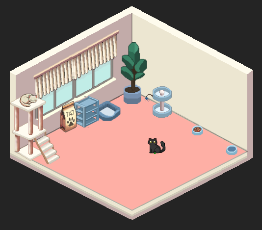
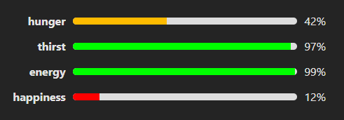
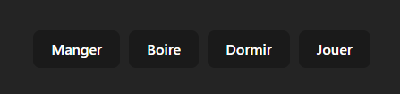

Charlie the Creature –
Cahier des Charges
Ce document détaillé spécifie l’ensemble des aspects du projet web
full-stack interactif dans lequel les utilisateurs interagissent avec un
pet virtuel au sein d’une pièce animée.
Table des Matières
1. Définition des Parties
Client
- Nom : Pascal Lacroix
- Rôle : Représentant de l’EAFC Fléron, chargé du
cours de projet web dynamique pour la section Web Developer.
- Coordonnées : webiepscf@gmail.com
Prestataire
- Nom : Charles Decheneux
- Rôle : Étudiant en 2ème année Web Developer à
l’EAFC Fléron, en charge de la réalisation du projet.
- Coordonnées : charles.d.pro@hotmail.com
2. Contexte du Projet
2.1 Contexte Initial
Le projet est réalisé dans le cadre du cours de projet web dynamique
de la section Web Developer à l’EAFC Fléron.
Pour valider ses acquis, le client impose des critères d’évaluation
issus du dossier pédagogique de l’unité de formation.
L’objectif est de livrer une application web dynamique fonctionnelle, en
utilisant des technologies modernes pour démontrer la compétence du
prestataire.
2.2 Contenu Fournis
- Par le Client :
Aucune fourniture directe de contenu. Toutefois, des maquettes issues de
la promotion Web Designer (2021-2022) de l’EAFC Fléron servent de
base.
- Par le Prestataire :
Le prestataire fournit l’intégralité du contenu nécessaire (code source,
assets graphiques, tutoriels d’installation).
Le dépôt GitHub est accessible à https://github.com/Charlie-D-Pro/Charlie-the-creature.
Certains éléments graphiques ont été achetés (ex. Pack “Cat Retro” sur
toffeecraft.itch.io) avec une licence autorisant
leur utilisation et modification.
3. Présentation du Projet
Charlie the Creature est une application web
interactive conçue pour démontrer les compétences Full-Stack du
prestataire.
L’application met en scène un pet virtuel, ici un petit chat, évoluant
dans sa chambre animée.
Les utilisateurs interagissent avec lui pour satisfaire ses besoins
(nourriture, hydratation, divertissement, repos).

Le pet évolue dans sa chambre interactive.

Les besoins du pet sont symbolisés par des jauges pour la faim, la
soif, l’énergie et le bonheur.

Les actions utilisateurs permettent de rétablir ces jauges à travers
des commandes simples.
4.
Fonctionnalités Clés, Technologies et Hébergement
4.1 Fonctionnalités Clés
Backend
- Persistance des Données :
Utilisation de MongoDB avec Mongoose
pour stocker l’état du pet, avec une initialisation automatique en
l’absence de données.
- API Endpoints :
GET /pet : Retourne l’état actuel du pet, avec une
décrémentation progressive des jauges (faim, soif, énergie,
bonheur).POST /pet : Met à jour l’état du pet en fonction des
actions (manger, boire, jouer, dormir).
Frontend
- Interface Utilisateur :
Développée en Vue.js 3 et optimisée avec
Vite, l’interface se compose de :
- Room.vue : Affichage de l’environnement animé avec
un décor interactif.
- Pet.vue : Animation et gestion des déplacements du
pet virtuel.
- Gauges.vue : Affichage des indicateurs visuels pour
la faim, la soif, l’énergie et le bonheur.
- UIControls.vue : Boutons permettant d’interagir
avec le pet.
- Objects.vue : Rendu des éléments décoratifs
complémentaires.
- Interactivité & Synchronisation :
Des composables personnalisés (ex. :
usePetState.js, usePetMovement.js,
usePetAnimation.js, usePetConfig.js) associés
à Axios assurent la mise à jour en temps réel de l’état
du pet.
4.2 Technologies et
Hébergement
- Backend :
- Technologies : Node.js, Express, MongoDB,
Mongoose.
- Déploiement :
- API déployée sur Render.
- Base de données hébergée sur MongoDB Atlas.
- Frontend :
- Technologies : Vue.js 3, Vite, Axios, CSS (pour
animations et transitions).
- Déploiement : Déployé sur
Vercel.
5. Phases et Planification du
Projet
Ce projet a été réalisé sur une période de 4 jours, se décomposant en
les étapes suivantes :
Milestone
1 – Initialisation du Backend et du Frontend
Objectif : Préparer l’environnement de
développement
Issues associées :
- [#1] Initialisation du backend :
- Création du dossier
backend
- Installation de Node.js et Express (
npm init,
npm install express)
- Mise en place de la structure de l’API
- [#2] Initialisation du frontend :
- Création du dossier
frontend
- Installation de Vue.js avec Vite
(
npm create vite@latest)
- Configuration de la structure de base des composants
Milestone
2 – Conception du Design et Intégration des Assets
Objectif : Mettre en place l’interface
utilisateur
Issues associées :
- [#3] Création du design UI :
- Mise en place du style graphique et définition du thème
- Définition des animations et interactions clés
- [#4] Configuration de la pièce et des éléments :
- Intégration du pack d’assets
- Placement des meubles et objets interactifs
- Création des hitboxes et des zones d’interaction
Milestone 3 –
Déplacement et Animations du Pet
Objectif : Permettre à l’animal de bouger et
d’interagir
Issues associées :
- [#5] Développement du système de déplacement :
- Création des animations de mouvement
- Gestion du comportement du pet en fonction de l’environnement
- [#6] Intégration des boutons de contrôle :
- Ajout de 4 boutons dédiés aux actions du pet
- Synchronisation des animations avec les interactions
utilisateur
Milestone
4 – Hébergement et Connexion Backend-Frontend
Objectif : Rendre le projet accessible en
ligne
Issues associées :
- [#7] Hébergement du frontend :
- Déploiement sur Vercel
- Configuration du build et des variables d’environnement
- [#8] Mise en place de la base de données :
- Création de la base de données MongoDB
- Définition du modèle
Pet et mise en place de la
persistance des données
- [#9] Hébergement du backend :
- Déploiement de l’API sur Render
- Mise en place de la connexion entre MongoDB et Express
- Vérification des appels API (GET & POST)
Milestone 5 –
Résolution des Bugs et Améliorations
Objectif : Assurer un fonctionnement stable du
projet
Issues associées :
- [#10] Correction des bugs liés à la mise en ligne :
- Résolution des erreurs de déploiement
- Vérification du bon fonctionnement en production
- [#11] Implémentation des jauges dynamiques :
- Décrémentation automatique des jauges
- Synchronisation des jauges avec les actions du pet
- [#12] Finalisation de l’expérience utilisateur :
- Amélioration de la fluidité des animations
- Optimisation des performances
6. Évolutions Futures
- Communication en Temps Réel : Intégration de
WebSocket pour une synchronisation améliorée.
- Nouvelles Fonctionnalités :
- Visualisation des émotions du pet
- Options de personnalisation (apparence du pet, de la pièce, des
meubles)
- Ajout d’un système de connexion (identifiant et mot de passe)
- Interface & Optimisation Mobile : Amélioration
de l’UX et réactivité sur dispositifs mobiles.
- Extension pour TFE : Enrichissement fonctionnel et
graphique pour une version finale.
- Budget :
- Les services de l’application sont fournis gracieusement.
- La main d’œuvre et l’investissement du prestataire ne sont pas
facturés.
- Certains assets ont été achetés pour un montant total de 3,32€.
- Hébergement :
- Utilisation de plans gratuits/éducatifs sur Render
(backend) et Vercel (frontend).
8. Encodage des Données
Les données relatives à l’état du pet sont encodées en JSON dans
MongoDB.
Un schéma défini via Mongoose garantit une gestion
structurée et cohérente des informations.
Fin du Cahier des Charges.